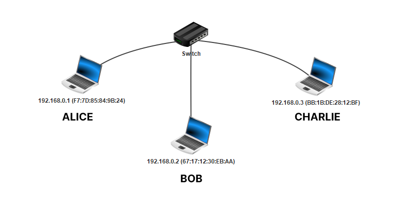
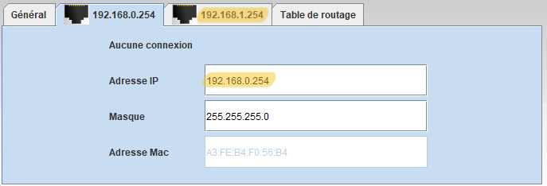

Filius est un logiciel qui permet de simuler un réseau informatique.
Document Réponse Capytale
Notez vos différentes réponses sur le document réponse, logique, non ?
Un réseau local
Objectif
L'objectif de cette partie est de comprendre comment le switch achemine les trames d'un nœud source vers le bon nœud de destination grâce aux adresses MAC.
Un premier réseau
Dans Filius, réaliser le réseau suivant. Cocher « Utiliser l'adresse IP comme nom » et « Utiliser l'adresse MAC comme nom ». Veuillez à bien définir les adresses IP des hôtes.

A travers ce TP, on associe aux différentes machines un utilisateur :
Utilisateur
Adresse IP
Alice
192.168.0.1
Bob
192.168.0.2
Charlie
192.168.0.3
Lancer la simulation.
Définir la vitesse de la simulation à 1%.
Avant l'envoie de données sur le réseau
Cliquer le switch pour révéler sa table interne SAT avant l'envoie de données sur le réseau.
Cliquer sur le premier hôte 192.168.0.1 (Alice). Installer le logiciel Ligne de commande sur cette machine et exécuter-le.
Questions 1
Que vaut la table SAT du switch initialement ?
Que renvoie la commande ipconfig ?
Que renvoie la commande arp ?
Après l'envoie de données sur le réseau local
Réaliser un ping de Alice 192.168.0.1 vers Charlie 192.168.0.3 grâce à la commande ping 192.168.0.3.
Questions 2
Que vaut maintenant la table SAT du switch ? À quoi sert-elle ?
Que renvoie maintenant la commande arp ? À quoi sert la table ARP ?
Que renvoie la commande arp sur l'hôte de destination Charlie 192.168.0.3 ? Et Bob 192.168.0.2 ?
Où est Charlie ?
Avant le premier ping, les différents hôtes et le switch n'ont aucune connaissance du réseau local auquel ils sont connectés. Ainsi quand Alice envoie un message à Charlie, elle ne connaît pas encore l'adresse MAC de ce dernier. Quelle adresse MAC de destination doit-elle inscrire sur la trame qu'elle envoie sur le réseau ?
Elle envoie simplement un message à tout le monde sur le réseau local pour trouver Charlie ! C'est ce que l'on appelle une diffusion générale, ou un broadcast.
Analyse de la découverte du réseau
Alice génère une trame : Alice fait une demande de ping, le message est « Bonjour Bob, c'est Alice, ceci est un ping. Renvoie-moi un message. ». Le protocole TCP encapsule ce message dans un segment, puis le protocole IP encapsule ce segment TCP dans un paquet IP. Ce paquet est enfin encapsulé dans une trame Ethernet.
** En-tête de la trame : Sur la trame qu'elle envoie sur le réseau, Alice y inscrit l'adresse MAC de destination FF:FF:FF:FF:FF:FF, c'est l'adresse de diffusion générale (broadcast)**.
Réception par le switch : Le switch reçoit la trame broadcast d'Alice et la diffuse sur tous ses autres ports, à Bob et à Charlie donc. Par ailleurs, il enregistre dans sa table SAT l'adresse MAC d'Alice (l'adresse MAC source de la trame) en y associant le port où Alice est connectée.
Réception par Bob : Bob reçoit la trame broadcast depuis le switch. Il la décapsule en un paquet et regarde l'adresse IP de destination. Ce n'est pas la sienne, donc il ignore le paquet.
Réception par Charlie : Charlie reçoit la trame broadcast et la décapsule, l'adresse IP de destination indiquée sur le paquet est la sienne. Il décapsule enfin le paquet jusqu'à lire le message d'Alice « Bonjour Bob, c'est Alice, ceci est un ping. Renvoie-moi un message. ». Il note aussi l'adresse MAC d'Alice dans sa table ARP.
Charlie génère une trame : Charlie renvoie donc un message à Alice. Il y inscrit l'adresse IP d'Alice sur le paquet et son adresse MAC sur la trame.
Réception par le switch : La trame de Charlie passe tout d'abord par le switch. Ce dernier ajoute l'adresse MAC de Charlie dans sa table ARP. Le switch connaît l'adresse MAC d'Alice, donc il aiguille la trame sur le bon port.
Réception par Alice : Alice reçoit le message de Charlie et note son adresse MAC dans sa table ARP.
En vidéo
N'hésitez pas à faire pause à chaque étape :
Questions 3
Quelles sont les adresses MAC source et de destination inscrit dans l'en-tête dans la première trame envoyée par Alice ?
Cette trame encapsule un paquet. Quelles sont les adresses IP source et de destination inscrit dans l'en-tête de ce paquet ?
Pourquoi Bob refuse ce qu'il reçoit ?
Pourquoi Charlie refuse ce qu'il reçoit ?
Quelles sont les adresses MAC source et de destination inscrit dans l'en-tête dans la trame envoyée par Charlie ? Et les adresses IP source et de destination du paquet encapsulé dans la trame ?
Est-ce que le switch décapsule les trames qu'il reçoit ? C'est-à-dire, regarde-t-il les adresses IP du paquet contenu dans la trame ? Change-t-il les adresses MAC source/destination de la trame ?
Est-ce que les différents hôtes, Alice, Bob et Charlie décapsulent les trames qu'ils reçoivent ?
Que se passe-t-il si Alice envoie un ping à l'adresse IP 192.168.0.4 dans la simulation (remettre la vitesse de simulation à 100%) ? Est-ce logique ?
Sous-réseaux
Objectif
L'objectif de cette partie est de comprendre comment la notion de sous-réseaux : la division d'un réseau en plusieurs sous-groupes.
Une introduction
Renommer le switch en « SwitchFrance ». Créer un second réseau de trois machines d'adresses IP 192.168.1.1, 192.168.1.2 et 192.168.1.3 avec un « SwitchUkraine ». Relier les deux switchs.
Utilisateur
Adresse IP
Anastasia
192.168.1.1
Boris
192.168.1.2
Katia
192.168.1.3
Questions 4
Tester un ping de 192.168.0.1 (Alice) vers 192.168.1.2 (Boris). Que se passe-t-il?
Renommer la machine 192.168.1.2 (Boris) en 192.168.0.4 et retenter le ping. Que se passe-t-il?
Masque de sous-réseau
Lorsqu'une machine A veut envoyer un message à une machine B, elle doit déterminer si cette machine :
appartient au même sous-réseau : auquel cas le message est envoyé directement via un ou plusieurs switchs.
n'appartient pas au même sous-réseau : auquel cas le message doit d'abord transiter par un routeur (voir plus loin).
La notion de sous-réseau n'est pas topologique — il ne suffit pas de relier physiquement les dispositifs entre eux — mais obéit à des règles numériques. C'est le masque de sous-réseau (parfois simplement masque, ou netmask en anglais) qui permet de déterminer quelles adresses font partie d'un même sous-réseau.
Adresse IP et masque de sous-réseau
Une adresse IP est codée sur 4 octets (32 bits) et peut être coupé en deux :
L'adresse du réseau : les \(k\) premiers bits
L'adresse du réseau : les \(32 - k\) bits restants.
Par défaut, le masque de Filius est 255.255.255.0, soit en binaire 11111111.11111111.11111111.00000000.
Donc \(k = 24\). On note souvent l'adresse IP d'Alice comme 192.168.0.1 /24
Suivant ce masque, 256 machines peuvent donc appartenir au même sous-réseau (ce n'est pas tout à fait le cas car des adresses finissant par 0 ou par 255 sont réservées).
Deux machines appartiennent a un même sous-réseau si elles partagent donc les 24 premiers bits, c'est à dire les 3 premiers nombres (octets). Ainsi Alice est dans le sous-réseau « 192.168.0 ».
Soit le masque 255.255.248.0, en binaire 11111111.11111111.11111000.00000000.
Donc \(k = 21\). L'adresse IP d'Alice se note 192.168.0.1 /21.
Deux machines appartiennent au même sous-réseau si elles partagent les 21 premiers bits de leur adresse IP.
Question 5
Dans l'exemple 2, combien de machines peuvent appartenir à ce même sous-réseau ?
Appartenance à un même sous-réseau
Pour que deux machines appartiennent à un même sous-réseau, il faut donc que leurs adresses IP respectives partagent les mêmes \(k\) premiers bits définis par le masque.
Pour cela, on extrait les \(k\) premiers bits correspondant au sous-réseau d'une adresse IP quelconque grâce l'opération du ET logique bit à bit (bitwise and en anglais) que l'on note & pour le différencier du ET logique usuel &&. On effectue le calcul Adresse IP & Masque. Par exemple :
Comme vous pouvez le constater, les bits à 0masque la partie inférieure de l'adresse IP !
Question 6
On considère trois hôtes A, B et C aux adresses IP respectives 192.168.129.10, 192.168.135.200 et 192.168.145.1 configurées avec le masque de sous-réseau 255.255.248.0. Remplir le tableau :
Machines
Adresse IP
Masque
Adresse IP & Masque
A
192.168.129.10
255.255.248.0
B
192.168.135.200
255.255.248.0
C
192.168.145.1
255.255.248.0
Le routeur
Objectif
L'objectif de cette partie est de comprendre comment le routeur interconnecte deux sous-réseaux en routant les paquets.
Comment faire pour que le sous-réseau « France » communique avec le sous-réseau « Ukraine » ? Comment interconnecter les deux sous-réseaux conçus précédemment ? Grâce à un équipement de la couche 3 (couche réseau), le routeur. Ce dispositif, parfois appelé passerelle, est équipé de deux cartes réseaux (chacune ayant une adresse physique MAC et une adresse logique IP) ou plus.
En mode conception , ajouter un routeur à deux interfaces et le relier aux deux switchs. Si vous ne l'avez pas déjà fait, supprimer le câble entre les deux switchs.
Pourquoi deux interfaces ? Il faut bien une carte réseau par sous-réseau !
Configurer le routeur :
Son interface reliée au « SwitchFrance » doit appartenir au sous-réseau « France ». Donc on doit configurer son adresse IP sous la forme 192.168.0.XXX (on conserve le masque par défaut 255.255.255.0).
Généralement, on donne une adresse finissant par 254 (255 étant réservé pour effectuer un ping l'intégralité d'un sous-réseau).
Faire de même pour la deuxième interface du routeur.
Sélectionner « Routage automatique » dans l'onglet « Général ».

En mode simulation , tester un ping depuis la machine 192.168.0.1 (Alice) vers 192.168.1.1 (Anastasia). Que se passe-t-il ?
La carte réseau d'Alice ne sait pas où envoyer les paquets car l'adresse IP d'Anastasia ne fait pas parti de son sous-réseau. Alice ne sait pas non plus qu'il existe un routeur (passerelle) dans son sous-réseau.
En mode configuration , cliquer sur la machine d'Alice et lui renseigner la passerelle de son sous-réseau. Retenter le ping.
Le ping se termine en timeout ? Il ne faut pas oublier qu'un ping renvoie un écho pong...
Une fois qu'Alice et Anastasia peuvent communiquer, effectuer un traceroute pour afficher le nombre de sauts nécessaires.
Questions 7
Exécuter l'invite de commandes de Windows : Win+R puis cmd puis Enter.
Grâce à la commande ipconfig /all, donner l'adresse IP et MAC de la carte réseau du PC.
Donner aussi l'adresse IP de la passerelle par défaut.
Afficher aussi la table ARP grâce à la commande arp -a. Quelle est l'adresse MAC de la passerelle ?
traceroute devient tracert sous Windows. L'adresse IP du serveur Web https://lycee-pons.org/ est 213.186.33.4. Combien faut-il de sauts pour y parvenir depuis votre poste ?